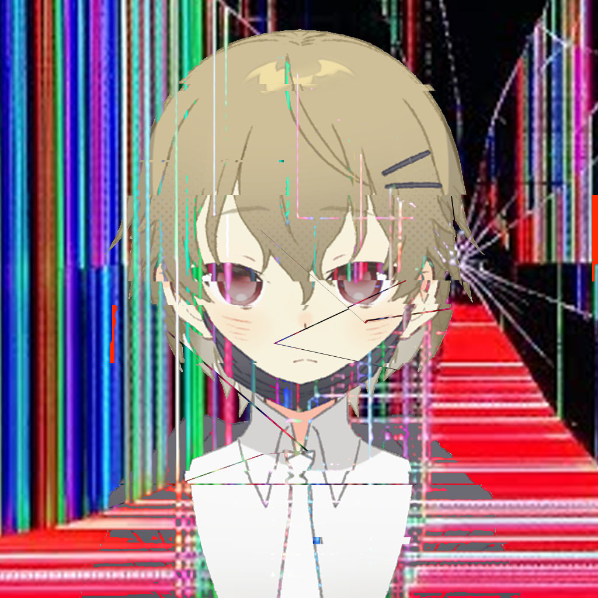

แล้วไงต่อ...?
ในเว็ปโง่ๆนี่คงไม่ได้มีอะไรให้ทุกคนสามารถInteractกับมันมากมาย
แต่สามารถทัวร์เว็ปได้ตามอัธยาศัยได้เลย~
" เน้น UX ไม่เน้น UI "
บุคคลจริงๆที่หันหาโลกอินเตอร์เน็ต
เพ้นท์หรือชื่อเต็ม " เพ้นท์ อิไกดะ "  เป็นบุคลิกสมมุติที่ ผมเป็นสร้างขึ้นเอง~~ เพื่อใช้แสดงในการเข้าหาผู้คนในโลกอินเตอร์เน็ต(เช่นการคุยงานระยะสั้น) นับว่าเป็นตัวละครหนึ่งที่ผมค่อนข้างปวดหัวกับตัวเองบ่อยๆว่าสรุปว่า เจ้าตัวนี่มันจะบุคคลิกแบบไหนกันแน่ BUT ผมก็ได้สรุปนิสัยต่างๆของเพ้นท์ไว้แบบคร่าวๆไว้แล้ว ซึ่งเจ้าตัวนี้ผมต้องการแสดงเป็นคนที่ ใจดี / คนง่ายๆ / เข้ากับทุกคนได้ และใช่มันก็อาจจะเป็นอย่างงั้นถ้าผมไม่ท้อไปซะก่อน www
ชื่อจริงๆผมชื่อ XXXX (หาเอง) อายุ XX (หาเอง) ชีวิตชอบทำไรเรื่อยเปื่อย อะไรอยากรู้หรือศึกษาก็จะทำ
โดยเฉพาะความรู้ที่หาได้บนโลกอินเตอร์เน็ต~
แล้วไงต่อ...?
ในเว็ปโง่ๆนี่คงไม่ได้มีอะไรให้ทุกคนสามารถInteractกับมันมากมาย
แต่สามารถทัวร์เว็ปได้ตามอัธยาศัยได้เลย~
" เน้น UX ไม่เน้น UI "